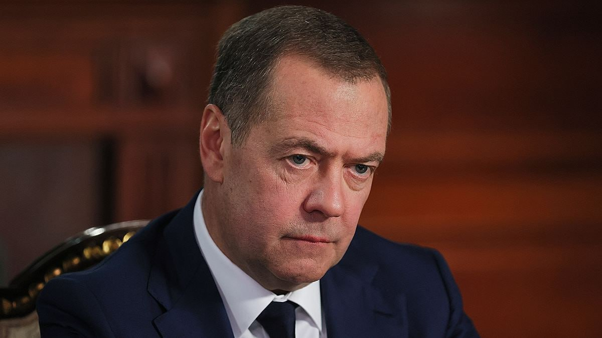

Топор Live
@toporlive
Топор Live
@toporlive
Запад разрушил отношения с Россией и теперь должен пожинать плоды в виде высокой инфляции и дорогого газа Медведев.

⚡️Запад разрушил отношения с Россией и теперь должен пожинать плоды в виде высокой инфляции и дорогого газа, — Медведев.
Другие заявления:
👉 Топор Live. Подписаться
Другие заявления:
— Россия не угрожает никому ни в Европе, ни на Западе, и выступает за равное партнерство с другими странами;
— Американские военные базы на Ближнем Востоке стали источником проблем, а не гарантом безопасности;
— «Наезд» США на Иран больно ударил по американцам, Вашингтону следует извлечь урок, что лучше договариваться, а не бряцать оружием;
— Важнейшим событием для России будет победа над силами, которые ей противостоят и используют Киев в качестве тарана. Залогом урегулирования должен стать нейтральный статус Украины и ее отказ от национализма;
— Ситуация в сфере безопасности на Ближнем Востоке чрезвычайно плохая из-за действий США и Израиля;
— Россия разработала инициативу по обеспечению коллективной безопасности на Ближнем Востоке;
— Россия помогла Ирану дипломатией и тем, что заблокировала резолюции Совбеза ООН, которые могли бы вывести удары по республике в легальную плоскость.
👉 Топор Live. Подписаться